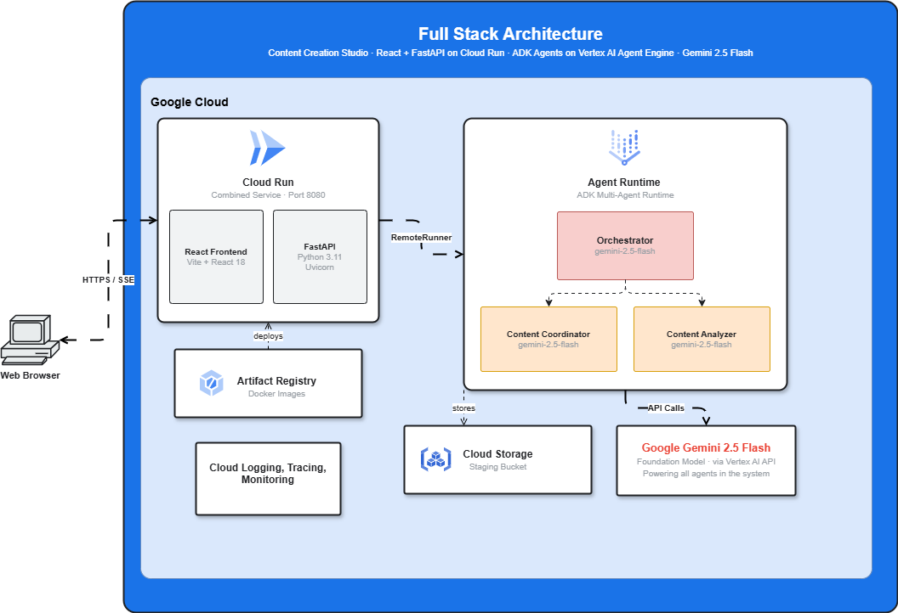
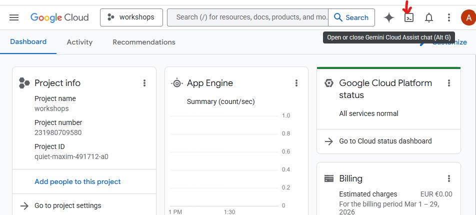
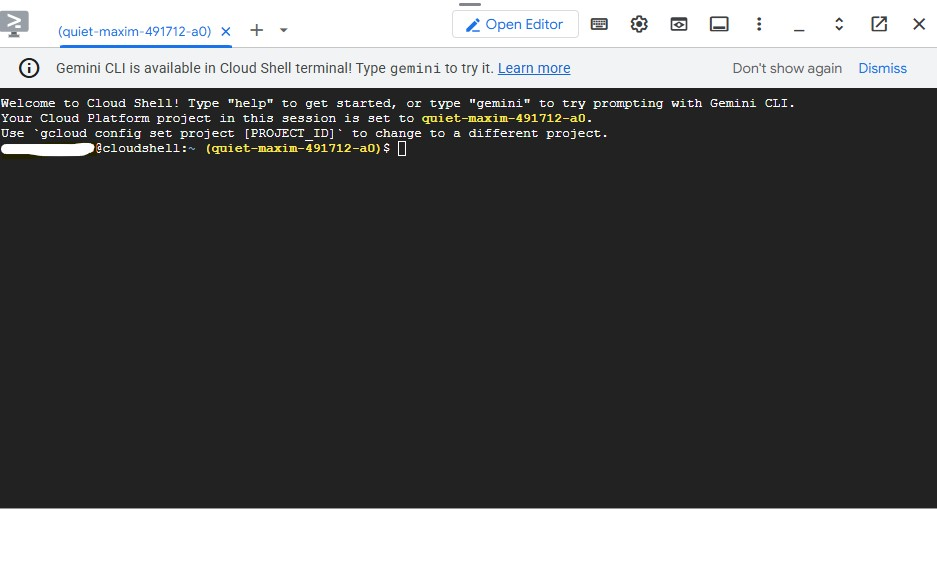
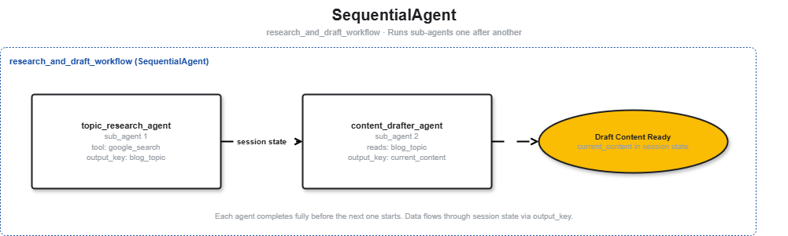
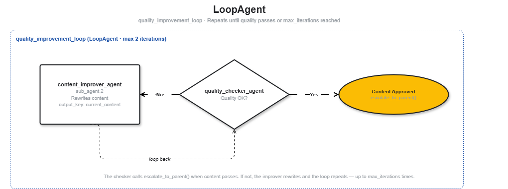
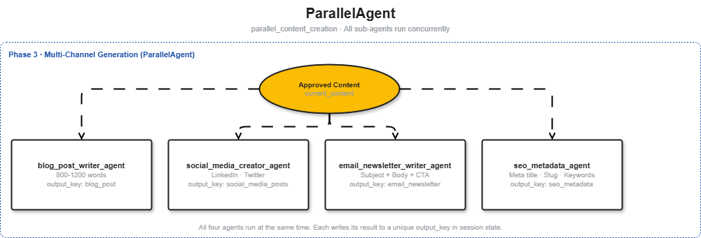

About this codelab
About this codelab
In this codelab, you will build a Content Creation Studio - a full-stack AI application powered by:
- Google ADK (Agent Development Kit) for orchestrating a multi-agent pipeline
- Gemini 2.5 Flash as the foundation model across all agents
- Gemini Enterprise Agent Runtime (formerly Vertex AI Agent Engine) for managed agent deployment
- FastAPI + React served from a single Cloud Run container
This is not a chatbot demo. You will build, deploy, and access a real web application backed by a team of collaborating AI agents.
What you'll build
You will build two layers of the same application:
Layer 1 - The Agent Pipeline
A team of specialized agents that collaborate to produce a complete content package from a single topic request.

Layer 2 - The Full-Stack App
A React frontend and FastAPI backend deployed as a single Cloud Run service, wired to your agents running on Agent Runtime, with real-time streaming via Server-Sent Events.

What you'll learn
ADK core concepts
- The ADK runtime: Runner, Session, SessionService, and the event model
- How session state flows between agents via
output_keyand{key}templating - How to add callbacks for observability and content safety guardrails (optional)
- How artifacts provide persistent file storage across sessions (optional)
- How to add long-term memory that survives session boundaries (optional)
Multi-agent design with ADK
- When to use LLM-Driven vs Workflow-Driven architectures
- How to chain agents with SequentialAgent
- How to build iterative quality loops with LoopAgent and
exit_loop - How to run tasks concurrently with ParallelAgent
- The two coordination patterns: AgentTool vs sub_agents
Deployment
- Deploy agents to Agent Runtime (managed, scalable)
- Package a React + FastAPI app into a single Docker container and deploy to Cloud Run
- Integrate the frontend with Agent Runtime via the ADK
RemoteRunner
Prerequisites
- A Google Cloud project with billing enabled
- Basic Python familiarity (functions, classes, async/await)
- No frontend experience required - the React app is provided
Google Cloud Credits
What is Cloud Shell?
Cloud Shell is a free browser-based Linux environment with everything pre-installed: gcloud, git, Python, Docker, and more. You don't need to install anything locally.
To open Cloud Shell, click the terminal icon in the top-right toolbar of the GCP Console:

When you open Cloud Shell for the first time, you'll be prompted to verify your account - click Verify:

Then click Authorize to allow Cloud Shell to make Google Cloud API calls:

Cloud Shell is now ready. You'll see a welcome message in the terminal:

Cloud Shell is now ready. You'll use two panels throughout this codelab:
┌──────────────────────────────────────────────────────┐
│ Cloud Shell Editor (top panel) │
│ • File tree on the left │
│ • Open files as tabs │
│ • Use cloudshell edit <file> to open a file here │
├──────────────────────────────────────────────────────┤
│ Terminal (bottom panel) │
│ • Run all commands here │
│ • Pre-authenticated with your Google account │
└──────────────────────────────────────────────────────┘
Authenticate and configure your project
Cloud Shell is already authenticated with your Google account. Confirm your active account and find your Project ID:
gcloud config list
Now capture your Project ID and region as shell variables — you'll use them throughout setup:
export PROJECT_ID=$(gcloud config get-value project)
export REGION="us-central1"
echo "Project: $PROJECT_ID"
Expected output:
Project: my-project-123
Enable required APIs
gcloud services enable \
aiplatform.googleapis.com \
run.googleapis.com \
cloudbuild.googleapis.com \
artifactregistry.googleapis.com \
storage.googleapis.com \
iam.googleapis.com \
cloudresourcemanager.googleapis.com \
logging.googleapis.com \
telemetry.googleapis.com \
cloudtrace.googleapis.com \
apphub.googleapis.com \
apptopology.googleapis.com \
observability.googleapis.com
This takes about 2 minutes. You'll see Operation finished successfully when done.
Set up Application Default Credentials (ADC)
The agents call Vertex AI using the Google Auth library, which requires Application Default Credentials - separate from the gcloud CLI authentication.
Run this once:
gcloud auth application-default login
A browser tab will open asking you to confirm. Click Allow. You'll see:
Credentials saved to file: ~/.config/gcloud/application_default_credentials.json
Clone the starter repository
This codelab uses a starter repository - a skeleton project with all infrastructure in place (Dockerfiles, pyproject.toml, deploy scripts) but with the agent logic left for you to write.
git clone -b codelab-release https://github.com/Saoussen-CH/google-adk-multi-agent-design-consideration-workshop.git workshop
cd workshop/codelab/starter
Each agent.py contains # TODO placeholders where you will write the agent logic.
👀 Verify - your terminal prompt should now show the starter directory:
...workshop/codelab/starter$
Configure environment variables
Copy the example .env and inject your project ID in one step:
cp .env.example .env
sed -i "s|GOOGLE_CLOUD_PROJECT=your-project-id|GOOGLE_CLOUD_PROJECT=${PROJECT_ID}|" .env
👀 Verify the project was set correctly:
grep GOOGLE_CLOUD_PROJECT .env
Expected output:
GOOGLE_CLOUD_PROJECT=my-project-123
Open .env in the editor to review all settings:
cloudshell edit .env
This opens .env as a tab in the Cloud Shell Editor. Click Open Editor in the toolbar if the editor panel is not visible.
Install dependencies
We use uv — a fast Python package manager that handles virtual environments and installs in a single tool. Cloud Shell already has uv installed.
uv sync
The uv sync command reads pyproject.toml, creates a .venv/ directory, and installs google-adk, google-cloud-aiplatform, fastapi, uvicorn, and the local agents, common, backend packages in editable mode. It may take a minute on the first run.
👀 Verify - the last line of output should show something like:
Resolved N packages in ...
Installed N packages in ...
What is an Agent?
What is an Agent? An agent is "a self-contained execution unit designed to act autonomously to achieve specific goals." Agents can perform tasks, interact with users, utilize external tools, and coordinate with other agents.
Reference: ADK Agents Documentation
What is ADK?
Agent Development Kit (ADK) is a flexible and modular framework for developing and deploying AI agents. While optimized for Gemini and the Google ecosystem, ADK is model-agnostic and deployment-agnostic. ADK was designed to make agent development feel more like software development - easier to create, deploy, and orchestrate agentic architectures ranging from simple tasks to complex workflows.
ADK handles the complex parts - tool calling, multi-turn conversation, session state, streaming - so you can focus on the agent logic.
Building blocks of an ADK agent
Every agent is composed of four building blocks:
Block | Role |
Model | The LLM that reasons over goals, determines a plan, and generates responses |
Tools | Functions that fetch data or perform actions by calling APIs or services |
Orchestration | Maintains memory and state across turns, routes tool calls, passes results back to the model |
Runtime | Executes the system when invoked - locally via |
Agent definition
Each agent in this codelab is defined the same way:
from google.adk.agents import Agent
from google.adk.tools import google_search
root_agent = Agent(
name="topic_research_agent", # unique identifier
model="gemini-2.5-flash", # the LLM powering this agent
instruction=SYSTEM_INSTRUCTION, # the agent's persona, constraints, and output format
description="Researches trending topics", # one-line summary used by orchestrators
tools=[google_search], # functions the LLM can call
output_key="blog_topic", # saves final response to session.state["blog_topic"]
)
Field | Purpose |
| Unique ID - used by orchestrators to route calls |
| The Gemini model backing this agent |
| System prompt - defines the agent's role, constraints, and output format |
| One-line summary - the orchestrator reads this to decide which specialist to call |
| Functions the LLM can invoke |
| Writes the agent's final response to |
How ADK runs an agent
User message
↓
Runner.run_async() ← starts the event loop
↓
Agent (LLM + tools) ← Gemini reasons, decides which tools to call
↓
Tool execution ← google_search, custom functions, other agents
↓
Agent generates response ← synthesizes tool results into a final answer
↓
Events stream back ← Runner yields each step; final event has is_final_response() = True
↓
Your code / adk web UI ← reads events, displays the result
The LLM decides autonomously whether to call a tool, which tool, and with what arguments. You write the instruction - ADK handles the rest.
Open the topic_research_agent file:
cloudshell edit agents/topic_research_agent/agent.py
How an agent is declared in ADK
# topic_research_agent/agent.py
from google.adk.agents import Agent
from google.adk.tools import google_search
from common.callbacks import inject_current_date
from common.retry import GENERATE_CONTENT_CONFIG
MODEL_NAME = "gemini-2.5-flash"
topic_research_agent = Agent(
name="topic_research_agent",
model=MODEL_NAME,
instruction="""
Today's date is {current_date}. Anchor "trending", "recent", and "this year" to this date.
You are a topic research expert. Based on the user's request,
use search to find trending angles and select the SINGLE BEST specific blog post title.
Output format: Just the title, nothing else.
Example: "10 AI Tools That Save Small Businesses 20 Hours Per Week"
""",
tools=[google_search],
before_agent_callback=inject_current_date,
generate_content_config=GENERATE_CONTENT_CONFIG,
output_key="blog_topic", # Saves the agent's final response to session state["blog_topic"]
)
root_agent = topic_research_agent
Why output_key? Without it, the agent's response exists only as a conversation message. With output_key="blog_topic", ADK automatically writes the response text to session.state["blog_topic"] - making it available to every other agent in the pipeline via {blog_topic} templating.
Test locally with ADK web UI
Now let's test the agent using the ADK web UI - a built-in chat interface for testing agents before deploying to cloud.
uv run adk web agents --allow_origins='*' --extra_plugins google.adk.plugins.logging_plugin.LoggingPlugin
Then open it in your browser via Web Preview:
- Click the Web Preview button (top-right of the Cloud Shell toolbar)
- Select "Preview on port 8080"
A new browser tab opens with the ADK Dev UI. Select topic_research_agent from the dropdown, then type:
Find the best blog topic about sustainable packaging for eco-conscious millennials
You'll see the agent call google_search and return a specific title. Expected output in the chat:
"10 Sustainable Packaging Innovations Winning Over Eco-Conscious Millennials in 2025"
In the State tab, you'll see blog_topic appear with that value. In the Events panel, click any event to inspect the exact model request and response.
Press Ctrl+C to stop the server.
Each agent that uses custom tools has its own tools.py inside its package. Open them in Cloud Shell Editor:
cloudshell edit agents/content_analyzer_agent/tools.py
cloudshell edit agents/quality_checker_agent/tools.py
cloudshell edit agents/content_improver_agent/tools.py
The tools are already implemented - your job in this step is to read and understand them before using them in later steps.
How ADK tools work
Any plain Python function with type-annotated parameters and a docstring becomes an ADK tool. The docstring is shown to the model as the tool description, so write it clearly.
def my_tool(input: str) -> dict:
"""Does something useful with the input."""
return {"result": "..."}
ADK handles everything else: converting the function to a JSON schema, calling it when the model requests it, and returning the result back to the model.
How ADK understands your tools
ADK examines three things about every function you pass as a tool:
- Function name - becomes the tool identifier the model calls
- Type hints - tells the model what types to pass and expect back
- Docstring - tells the model when and why to use the tool
Passing custom tools to an agent: FunctionTool
Built-in tools like google_search are passed directly in the tools list. Custom Python functions must be wrapped in FunctionTool so ADK knows to treat them as callable tools:
from google.adk.tools import FunctionTool
agent = Agent(
name="my_agent",
tools=[FunctionTool(my_tool)], # custom function → wrapped
# tools=[google_search], # built-in tool → passed directly
)
You'll see FunctionTool used in the agent files starting from the Quality Loop section.
Walk through the tools
Each agent owns its tools — open each file and read through the functions. Here is what each tool does and why it exists:
Tool | Returns | Purpose |
|
| Counts words by splitting on whitespace |
|
| Flesch Reading Ease formula - higher score = easier to read |
|
| Extracts frequent non-stop words and formats them as #Hashtags |
|
| Weighted formula: 30% word count + 30% readability + 40% structure |
|
| Sets |
Your turn: implement count_words
One tool is left for you to implement so you experience writing an ADK tool yourself. Open agents/content_analyzer_agent/tools.py:
cloudshell edit agents/content_analyzer_agent/tools.py
Find the # TODO: #REPLACE-count-words comment. Replace the pass with:
count = len(text.split())
print(f" Result: {count} words")
return count
See the agent use the tools
The unit test above calls the functions directly. Now run the actual agent so you can see the LLM decide when to call each tool and what to do with the results.
Start the ADK web interface:
uv run adk web agents --allow_origins='*' --extra_plugins google.adk.plugins.logging_plugin.LoggingPlugin
Select content_analyzer_agent from the dropdown, then send:
Analyze this text: "Artificial intelligence is transforming the way we work and live. Machine learning models can now write code, generate images, and hold conversations. These tools are becoming essential for developers and businesses alike."
The agent has three tools at its disposal:
count_words— the one you just implemented. Splits the text on whitespace and returns the word count.calculate_readability_score— applies the Flesch Reading Ease formula and returns a score (0–100) and a grade label (e.g. "Standard", "Easy"). Higher score = easier to read.generate_hashtags— extracts the most frequent non-stop words from the text and formats them as#Hashtagsfor social media use.
You should see the agent call all three in sequence, then return a structured report — for example:
Word count: 42 words
Readability: score 48.3 (Standard / 10th grade)
Hashtags: #machinelearning #artificialintelligence #tools #developers #businesses
Press Ctrl+C to stop the server.
You now have all the tools your agents will use. The next question is: how do agents work together? Before building the multi-step pipeline, you need to understand the two ways ADK lets agents delegate work to each other.
SequentialAgent
A SequentialAgent runs its sub_agents list in strict left-to-right order. Each agent completes before the next one starts. This is perfect for pipelines where step 2 depends on the output of step 1.
SequentialAgent
→ runs topic_research_agent (writes blog_topic to state)
→ then runs content_drafter_agent (reads blog_topic from state)

The content drafter
content_drafter_agent reads {blog_topic} from session state (written by topic_research_agent) and writes a 400-600 word draft blog post in markdown to current_content. Its instruction is already pre-filled in the starter code.
How session state works
Every ADK conversation has a Session object with a state dictionary. All agents in the same session share this dictionary - it's how they pass data to each other.
topic_research_agent
writes → session.state["blog_topic"] = "10 Ways to..."
↓
content_drafter_agent
reads → {blog_topic} in instruction resolves to "10 Ways to..."
writes → session.state["current_content"] = "# 10 Ways to...\n\n..."
The {key} syntax in an instruction is ADK's key templating feature. Before calling the model, ADK substitutes {blog_topic} with the current value of session.state["blog_topic"].
Use {{key?}} (with a ?) for optional keys - this prevents errors if the key doesn't exist yet.
Fill in the first workflow
Open the orchestrator_agent file:
cloudshell edit agents/orchestrator_agent/agent.py
Find the # TODO: #REPLACE-research-and-draft-workflow comment and replace it with:
research_and_draft_workflow = SequentialAgent(
name="research_and_draft_workflow",
sub_agents=[topic_research_agent, content_drafter_agent],
)
At the bottom of agents/orchestrator_agent/agent.py, set:
root_agent = research_and_draft_workflow
Why
root_agent
? ADK and adk web discover the entry-point agent by looking for a module-level variable named exactly root_agent. Every agent.py must expose this name — it tells the framework which agent to hand the first user message to when a session starts. As you build this system step by step you reassign root_agent to whichever agent is the current top of the tree, so you can test each stage independently.
Test the sequential workflow
uv run adk web agents --allow_origins='*' --extra_plugins google.adk.plugins.logging_plugin.LoggingPlugin
Select orchestrator_agent from the dropdown, then enter the prompt:
Write a blog about sustainable packaging for eco-conscious millennials
In the Events panel you'll see topic_research_agent fire first, then content_drafter_agent. In the State tab, both keys appear in sequence:
blog_topic → "10 Sustainable Packaging Innovations..."
current_content → "# 10 Sustainable Packaging Innovations...\n\n..."
Press Ctrl+C to stop the server.
A draft is a starting point, not a finished product. In this step you'll add an automatic quality review cycle.
LoopAgent
A LoopAgent runs its sub_agents list in order, then repeats from the beginning. It stops when either:
max_iterationsis reached (the safety ceiling), or- A sub-agent calls
exit_loop, which setstool_context.actions.escalate = True
LoopAgent (max 2 iterations)
Iteration 1:
→ quality_checker_agent (scores current_content, writes quality_feedback)
→ content_improver_agent (sees score < 70, rewrites content)
Iteration 2:
→ quality_checker_agent (scores improved content, writes quality_feedback)
→ content_improver_agent (sees "QUALITY_THRESHOLD_MET", calls exit_loop → STOP)

The quality checker and content improver
Both agents are pre-filled in the starter code:
quality_checker_agentreads{current_content}, callscalculate_content_quality_scorewith estimated word count, readability, headings, and conclusion presence. Ifoverall_score >= 70it responds withQUALITY_THRESHOLD_MET; otherwise it lists specific issues.content_improver_agentreads{current_content}and{quality_feedback}. If feedback isQUALITY_THRESHOLD_METit callsexit_loopto stop the loop early. Otherwise it rewrites the content to fix the reported issues and saves the improved version back tocurrent_content.
Fill in the LoopAgent
Find the # TODO: #REPLACE-quality-improvement-loop comment in agents/orchestrator_agent/agent.py and replace it with:
quality_improvement_loop = LoopAgent(
name="quality_improvement_loop",
sub_agents=[quality_checker_agent, content_improver_agent],
max_iterations=MAX_IMPROVEMENT_ITERATIONS,
)
Test with the sequential + loop pipeline
Update the bottom of agents/orchestrator_agent/agent.py:
root_agent = SequentialAgent(
name="two_phase_pipeline",
sub_agents=[research_and_draft_workflow, quality_improvement_loop],
)
Run uv run adk web agents --allow_origins='*' --extra_plugins google.adk.plugins.logging_plugin.LoggingPlugin, select orchestrator_agent from the dropdown, and enter the prompt:
Write a blog about sustainable packaging for eco-conscious millennials
Press Ctrl+C to stop the server.
The draft has been researched, written, and quality-checked. Now generate four content formats simultaneously.
ParallelAgent
A ParallelAgent runs all its sub_agents at the same time. Each agent independently reads the same session state snapshot. This is the "fan-out" pattern: one input, multiple concurrent outputs.
ParallelAgent
├── blog_post_writer_agent (reads current_content → writes final_blog_post)
├── social_media_creator_agent (reads current_content → writes social_media_posts)
├── email_newsletter_writer_agent (reads current_content → writes email_newsletter)
└── seo_metadata_agent (reads current_content → writes seo_metadata)

Why it matters - the latency difference:
Approach | Execution | Total time |
Sequential (one at a time) | blog (10s) → social (10s) → email (10s) → SEO (10s) | ~40 seconds |
Parallel (all at once) | blog ‖ social ‖ email ‖ SEO | ~10 seconds |
All four agents run concurrently, so the total time equals the slowest single agent - not the sum of all four. That's a 4× latency reduction for this pipeline.
The four parallel agents
All four agents are pre-filled in the starter code. Each reads {current_content} from session state and writes to its own unique output_key:
Agent | output_key | What it produces |
|
| Publication-ready blog post, 800-1200 words |
|
| LinkedIn post, Twitter thread, Instagram caption |
|
| Subject line, preview text, 300-400 word body with CTA |
|
| Meta title, description, URL slug, focus keyword, 5 related keywords |
Fill in the ParallelAgent
Find the # TODO: #REPLACE-parallel-content-creation comment in agents/orchestrator_agent/agent.py and replace it with:
parallel_content_creation = ParallelAgent(
name="parallel_content_creation",
sub_agents=[
blog_post_writer_agent,
social_media_creator_agent,
email_newsletter_writer_agent,
seo_metadata_agent,
],
)
Now compose all three phases into the complete content workflow.
Fill in the full workflow
Find the # TODO: #REPLACE-full-content-workflow comment in agents/orchestrator_agent/agent.py and replace it with the complete pipeline:
# agents/orchestrator_agent/agent.py
full_content_workflow = SequentialAgent(
name="full_content_workflow",
sub_agents=[
research_and_draft_workflow, # Phase 1: research → draft
quality_improvement_loop, # Phase 2: check → improve (loop)
parallel_content_creation, # Phase 3: 4 formats in parallel
],
)
root_agent = full_content_workflow
This is a SequentialAgent wrapping other SequentialAgent, LoopAgent, and ParallelAgent instances. ADK treats all agent types uniformly as sub_agents, so nesting works at any depth.
Test the complete pipeline
Run uv run adk web agents --allow_origins='*' --extra_plugins google.adk.plugins.logging_plugin.LoggingPlugin, select orchestrator_agent from the dropdown, and enter the prompt:
Write a blog about sustainable packaging for eco-conscious millennials
All four keys should appear in the State tab simultaneously after the research → draft → quality loop completes:
final_blog_post → "# 10 Sustainable Packaging Innovations..."
social_media_posts → "**LinkedIn Post**\n..."
email_newsletter → "**Subject Line:** ..."
seo_metadata → "**Meta Title:** ..."
The complete hierarchy you just built:
full_content_workflow (SequentialAgent)
├── 1. research_and_draft_workflow (SequentialAgent)
│ ├── topic_research_agent
│ └── content_drafter_agent
├── 2. quality_improvement_loop (LoopAgent)
│ └── [quality_checker_agent + content_improver_agent]
└── 3. parallel_content_creation (ParallelAgent)
├── blog_post_writer_agent
├── social_media_creator_agent
├── email_newsletter_writer_agent
└── seo_metadata_agent
Press Ctrl+C to stop the server.
You now have a complete three-phase content pipeline. But users don't always want to create content - sometimes they want to analyze existing text. Rather than exposing two separate entry points, you'll wrap everything behind a single orchestrator that reads the user's intent and routes accordingly.
This is the Coordinator pattern from the architecture framework: one LLM-Driven agent at the boundary, two Workflow-Driven agents behind it. The orchestrator decides; the specialists execute.
Content Analyzer Agent
content_analyzer_agent is already complete — you built and tested it in section 5. It has all three tools wired in (count_words, calculate_readability_score, generate_hashtags) and its own root_agent. Here you simply add it as a sub-agent of the orchestrator.
Fill in the orchestrator
Find the # TODO: #REPLACE-orchestrator comment in agents/orchestrator_agent/agent.py and replace it with:
orchestrator_agent = LlmAgent(
name="orchestrator_agent",
model=MODEL_NAME,
instruction="""
You are the Content Creation Studio orchestrator. Delegate tasks to specialists.
Past conversations from long-term memory are automatically loaded before each turn.
Use this context to provide continuity across sessions.
- For FULL content creation (topic research -> draft -> improve -> multi-channel content),
transfer to `full_content_workflow`. Pass the complete user request with topic,
audience, tone, and keywords.
- For ANALYZING existing text (readability, word count, hashtags),
transfer to `content_analyzer_agent`.
Always delegate to the appropriate agent.
""",
sub_agents=[full_content_workflow, content_analyzer_agent],
#tools=[preload_memory_tool.PreloadMemoryTool()],
generate_content_config=GENERATE_CONTENT_CONFIG,
#before_agent_callback=before_agent_callback,
#after_agent_callback=after_agent_callback,
#before_model_callback=before_model_callback,
#after_model_callback=after_model_callback,
)
root_agent = orchestrator_agent
Test routing
uv run adk web agents --allow_origins='*' --extra_plugins google.adk.plugins.logging_plugin.LoggingPlugin
Select orchestrator_agent from the dropdown.
Test the analyzer route:
Analyze this text: Artificial intelligence is transforming the way businesses operate.
You should see it route to content_analyzer_agent and return output like:
Word count: 9
Readability score: 42.3 (Difficult)
Hashtags: #ArtificialIntelligence #BusinessTransformation #AI #Technology #Innovation
Test the content creation route:
Create content about sustainable packaging for eco-conscious millennials, tone: inspiring
You should see it route to full_content_workflow and run the full three-phase pipeline. All four content keys will appear in the State tab when complete.
Press Ctrl+C to stop the server.
What is Agent Runtime?
Agent Runtime (formerly Vertex AI Agent Engine) is the fully-managed runtime for ADK agents inside the Gemini Enterprise Agent Platform. Deploying an agent on Agent Runtime makes it available remotely to handle requests — any client (your Cloud Run backend, the in-console playground, scripts, other agents) can call it without ever holding the agent code itself.
Why deploy here instead of running it yourself?
- Serverless efficiency: A fully managed runtime deploys and scales agents efficiently with no underlying infrastructure to manage, and gives you reliable performance with built-in observability (Cloud Logging + Cloud Trace + metrics).
- Context management: Agent Platform Sessions persist conversation state across requests, and Agent Platform Memory Bank stores long-term, personalized memories. Together they let your agents continue conversations and recall facts about users across sessions, instead of starting from scratch each turn.
- Remote availability: Once deployed, the agent is exposed behind a stable resource name. The Python SDK (
agent_engines.get(...)) gives you a remote handle that streams events as if the runner were local. This is what the FastAPI backend in the next section uses.
Why not just keep running locally?
Your agent works great in adk web. But local development has hard limits:
Problem | Local | Agent Runtime |
Who can use it | Only you | Anyone with the URL |
Sessions after restart | Lost | Persisted automatically |
Multiple users at once | No | Auto-scales |
Monitoring and logs |
| Cloud Logging + Tracing |
24/7 availability | Only when your machine runs | Always on |
Agent Runtime vs building your own infrastructure:
Concern | DIY | Agent Runtime |
Servers and containers | You set up | Managed |
Auto-scaling | You configure | Automatic |
Monitoring | You build | Built-in |
Security | You configure | Secure by default |
Time to deploy | Days | Minutes |
Cost at zero usage | Idle servers cost money | Scales to zero |
Create a GCS bucket
gcloud storage buckets create gs://$GOOGLE_CLOUD_PROJECT-content-studio --location=us-central1
Update the bucket in your .env:
sed -i "s|GOOGLE_CLOUD_STORAGE_BUCKET=gs://your-project-id-content-studio|GOOGLE_CLOUD_STORAGE_BUCKET=gs://${GOOGLE_CLOUD_PROJECT}-content-studio|" .env
Deploy
uv run python deployment/deploy.py --action deploy
This packages your agents/ module, uploads it to GCS, and deploys it to Agent Runtime. The process takes 5-10 minutes. When complete, it automatically writes AGENT_ENGINE_RESOURCE_NAME to your .env. Verify it was set:
grep AGENT_ENGINE_RESOURCE_NAME .env
Expected output:
AGENT_ENGINE_RESOURCE_NAME=projects/123456/locations/us-central1/reasoningEngines/789012345
Test the remote agent
uv run python deployment/deploy.py --action test_remote
You should see a streaming response from the deployed agent:
Testing remote agent...
Session created: session_abc123
Streaming response:
"10 Sustainable Packaging Innovations Winning Over Eco-Conscious Millennials"
# 10 Sustainable Packaging Innovations...
[content streams in chunks]
Test complete.
Test from the Cloud Console playground
You can also chat with your deployed agent directly from the Google Cloud Console — no code required.
- Open the Agent Runtime console
- Click your deployed agent (
content-creation-multiagentsystem) - Click Test in playground
- Enter a prompt such as:
Create a complete content package for:
- Topic: AI tools for freelancers in 2025
- Target Audience: Independent professionals and solopreneurs
- Tone: Practical and motivating
- Keywords: AI freelance, automation, productivity tools
You should see the agent run through the full pipeline — research → draft → quality loop → parallel content creation — and return blog post, social media, email newsletter, and SEO metadata.
Inspect traces in Cloud Trace
After running a query (either from --action test_remote or the playground), view traces in the console:
- Open the Agent Platform Deployments page
- Click your deployment (
content-creation-multiagentsystem) - Click the Traces tab
- Switch between Session view and Span view, then click any session/span to see the DAG, inputs/outputs, and attributes
You'll see one span per sub-agent and per LLM call — the structure mirrors the orchestrator you built (research_and_draft_workflow → quality_improvement_loop → parallel_content_creation), so the bottlenecks in your pipeline become visually obvious.
So far you've run the agent locally via adk web. In this step you'll deploy a production web application: a React frontend served by a FastAPI backend, both packaged in a single Docker container on Cloud Run.
How the backend connects to Agent Runtime
Open the backend server file to explore it:
cloudshell edit backend/api_server.py
The key section:
from vertexai import agent_engines
AGENT_RESOURCE_NAME = os.environ.get("AGENT_RESOURCE_NAME") or os.environ.get("AGENT_ENGINE_RESOURCE_NAME")
remote_agent = None
if AGENT_RESOURCE_NAME:
remote_agent = agent_engines.get(AGENT_RESOURCE_NAME)
agent_engines.get() returns a remote handle - a thin client that forwards calls to your deployed Agent Runtime instance. (The Python SDK module is still named agent_engines even though the product is now called Agent Runtime.) You can then call remote_agent.async_create_session() and remote_agent.async_stream_query() as if it were a local runner.
The streaming endpoint
The /api/create-content endpoint streams results to the frontend using Server-Sent Events (SSE):
@app.post("/api/create-content")
async def create_content(request: ContentRequest):
session = await remote_agent.async_create_session(user_id="web_user_001")
async def generate():
async for event in remote_agent.async_stream_query(
user_id="web_user_001",
session_id=session['id'],
message=query
):
author = event.get("author", "")
channel = CHANNEL_MAP.get(author)
# extract text ...
if channel and text:
yield f"data: {json.dumps({'type': 'content_piece', 'channel': channel, 'content': text})}\n\n"
return StreamingResponse(generate(), media_type="text/event-stream")
The CHANNEL_MAP pattern
This is the key bridge between agent events and the frontend UI:
CHANNEL_MAP = {
"blog_post_writer_agent": "blog_post",
"social_media_creator_agent": "social_media",
"email_newsletter_writer_agent": "email_newsletter",
"seo_metadata_agent": "seo_metadata",
}
Because the master orchestrator uses sub_agents (not AgentTool), each inner agent's events propagate and include an author field with the agent's name. The backend reads that author, looks it up in CHANNEL_MAP, and sends the content to the frontend tagged with the right channel. This is exactly why sub_agents was the right choice - as explained in the Agent Teams section.
The React frontend subscribes to the SSE stream and renders each channel's content as it arrives - giving users real-time feedback as each content format completes.
The Docker multi-stage build
Open the Dockerfile at the project root:
cloudshell edit Dockerfile
It uses a two-stage build:
# Stage 1: Build React frontend
FROM node:20-alpine AS frontend-build
WORKDIR /frontend
COPY frontend/package*.json ./
RUN npm ci
COPY frontend/ ./
RUN npm run build
# Stage 2: Python backend with uv + built frontend static files
FROM python:3.12-slim
RUN pip install --no-cache-dir uv==0.8.13
WORKDIR /code
COPY pyproject.toml uv.lock* ./
COPY agents ./agents
COPY common ./common
COPY backend ./backend
RUN uv sync --frozen --no-dev
COPY --from=frontend-build /frontend/dist ./backend/static
CMD exec uv run uvicorn backend.api_server:app --host 0.0.0.0 --port ${PORT}
Stage 1 compiles the React app (npm run build) and produces static files in /frontend/dist. Stage 2 installs uv, copies pyproject.toml plus the local agents, common, and backend packages, and runs uv sync --frozen to install everything from the lockfile. The result is a single container that serves both the API and the UI.
FastAPI serves the built React files from the /assets path and falls back to index.html for the root:
if STATIC_DIR.exists():
app.mount("/assets", StaticFiles(directory=str(STATIC_DIR / "assets")), name="assets")
@app.get("/")
async def serve_frontend():
index_file = STATIC_DIR / "index.html"
if index_file.exists():
return FileResponse(str(index_file))
Set up GCP infrastructure
Before deploying, run the setup script once. It creates the Artifact Registry repository, service account, IAM roles, and configures Docker authentication:
bash deployment/setup_gcp.sh
This is a one-time setup. It is safe to re-run - it skips resources that already exist.
Deploy to Cloud Run
Once setup is complete, the deployment script handles everything - building the image, pushing to Artifact Registry, and deploying:
bash deployment/deploy-combined.sh
The script will:
- Read your
.envfor project ID, region, andAGENT_ENGINE_RESOURCE_NAME - Build and push the Docker image using
gcloud builds submit(runs entirely in GCP - no local Docker networking required) - Deploy to Cloud Run with
gcloud run deploy, passingAGENT_ENGINE_RESOURCE_NAMEas an environment variable
When complete, it prints the Cloud Run service URL, for example:
https://content-studio-abc123-uc.a.run.app
Test the full stack
Open the URL in your browser. You should see the React UI. Fill in the form with:
- Topic: AI tools for freelancers in 2026
- Target Audience: Independent professionals and solopreneurs
- Tone: Practical and motivating
- Keywords: AI freelance, automation, productivity tools
Click Create Content — all four channels (Blog Post, Social Media, Email Newsletter, SEO Metadata) should stream in and populate in real time.

Troubleshooting
agent_connected: false - The AGENT_ENGINE_RESOURCE_NAME environment variable wasn't passed to Cloud Run. Redeploy with it set in your .env.
Frontend shows blank page - Check that the Docker build completed without errors and that ./static/index.html exists inside the container.
Streaming stops mid-way - Cloud Run has a default request timeout of 60 seconds. For long content generation runs, increase it:
gcloud run services update content-studio \
--timeout=300 \
--region=us-central1
To avoid ongoing charges, run the cleanup script to tear down all resources created during this codelab.
What gets cleaned up
The script removes everything created by setup_gcp.sh and deploy-combined.sh:
Resource | How removed |
Cloud Run service |
|
Agent Runtime deployment (reasoning engine resource) |
|
Docker images in Artifact Registry |
|
Artifact Registry repository | Optional prompt |
Service account + IAM bindings | Optional prompt |
Cloud Storage bucket | Optional prompt |
Run the cleanup script
bash deployment/cleanup_gcp.sh
The script reads your .env file, shows what it will delete, and asks for confirmation before proceeding:
⚠️ WARNING: This will DELETE the following resources:
1. Cloud Run service: content-studio
2. Agent Runtime deployment: projects/123456/.../reasoningEngines/789012345
3. Docker images in Artifact Registry
4. Service Account: content-studio-sa@... (optional)
5. Cloud Storage Bucket: gs://your-project-content-studio (optional)
This action CANNOT be undone!
Are you sure you want to proceed? (yes/no):
Type yes to proceed. Resources 4 and 5 will each prompt separately - you can choose to keep them if you plan to reuse the project.
Verify in the Cloud Console
Navigate to Agent Runtime and Cloud Run and confirm your resources are no longer listed.
Tip: Set a budget alert on your GCP project to get notified if charges exceed your expected threshold.
You've seen how a single agent uses tools to get things done. But in a multi-agent system, agents also need to delegate work to other agents. ADK gives you two patterns for this - and choosing the wrong one has real consequences for how data flows, how events are visible, and how much control the parent agent has.
Pattern 1: AgentTool (agent as a callable tool)
AgentTool wraps an entire agent as a tool that a parent agent can call. The parent LLM decides when to call it and what to pass as input, just like any other tool.
from google.adk.tools import agent_tool
specialist_a_tool = agent_tool.AgentTool(agent=specialist_a)
specialist_b_tool = agent_tool.AgentTool(agent=specialist_b)
coordinator = Agent(
name="coordinator",
model=MODEL_NAME,
instruction="""
You are a coordinator. Use your tools to:
- Delegate task A with the specialist_a tool
- Delegate task B with the specialist_b tool
""",
tools=[specialist_a_tool, specialist_b_tool],
)
What happens internally: The parent agent makes an LLM call, the model emits a tool-call for topic_research_agent, ADK invokes that agent, and the result comes back as a tool response in the parent's conversation. The inner agent's events are not propagated to the outer runner.
Pattern 2: sub_agents (hierarchical delegation)
sub_agents declares a parent-child relationship. The parent LLM can transfer control to a sub-agent. The sub-agent runs in the same session, reads the same state, and its events propagate to the outer runner.
orchestrator = Agent(
name="orchestrator",
model=MODEL_NAME,
instruction="Route content creation to full_content_workflow, analysis to content_analyzer_agent.",
sub_agents=[full_content_workflow, content_analyzer_agent],
)
Choosing between the two
AgentTool | sub_agents | |
Nature | Discrete, stateless - like a function call | Stateful, context-dependent - full control transfer |
Execution context | Runs in an isolated Runner with its own session | Runs in the same invocation context as the parent |
Inner events visible externally? | No - black box, caller only sees final text | Yes - all inner events propagate to the outer runner |
Session state shared? | No - only | Yes - full shared state through invocation context |
Control flow | LLM decides per turn (function-call style) | LLM transfers control; workflow agents use deterministic order |
Best for | Discrete, stateless subtasks | Stateful pipelines, streaming, SSE backends |
Why this codelab uses sub_agents: The FastAPI backend in the Full-Stack Cloud Run Deployment section uses Server-Sent Events (SSE) to stream content to the React frontend in real time. It does this by reading events from the runner - specifically, it checks the author field of each event to know which agent produced it. This only works with sub_agents because inner agent events propagate. With AgentTool, inner events are hidden and the backend would receive nothing to stream.
A practical example: the orchestrator pattern
Both patterns support the same high-level idea - a coordinator that delegates to specialists:
User request
↓
coordinator/orchestrator
├── delegates to → specialist_A
└── delegates to → specialist_B
The difference is whether that delegation is a tool call (AgentTool) or a control transfer (sub_agents). For the Content Creation Studio, control transfer via sub_agents is the right choice because we need event visibility for real-time streaming.
Before writing any agent code, the most important question is: what pattern fits your problem? Using the wrong architecture leads to brittle systems, unnecessary cost, and agents that fight each other instead of collaborating.
Pattern categories
Google Cloud groups agentic patterns into four categories based on your workload's characteristics:
Deterministic workflows - the execution order is fixed in code, not decided by a model:
If your task looks like this... | Pattern |
Multi-step pipeline where each step depends on the previous | Sequential |
Independent sub-tasks that can run at the same time | Parallel |
Complex generation requiring progressive quality improvement | Iterative Refinement |
Dynamic orchestration - a model decides routing and delegation at runtime:
If your task looks like this... | Pattern |
Varied inputs needing adaptive routing to specialized agents | Coordinator |
Complex, ambiguous tasks requiring multi-level decomposition | Hierarchical Task Decomposition |
Iterative workflows - repeat execution until a condition is met:
If your task looks like this... | Pattern |
Automated repetition with a predefined termination condition | Loop |
Output requires distinct validation before completion | Review and Critique |
Special requirements:
If your task looks like this... | Pattern |
High-stakes decisions requiring human judgment or approval | Human-in-the-Loop |
The constraints that drive your choice
Cost and latency Every agent hop is an extra LLM call. A 5-agent pipeline uses at least 5× the tokens of a single agent. Parallel agents reduce latency but increase concurrent cost. If budget is tight: use deterministic patterns, smaller models for simple steps, or replace LLM agents with plain Python functions.
Determinism vs flexibility Deterministic patterns (Sequential, Parallel, Loop) are faster and more predictable - the code controls the flow. Dynamic patterns (Coordinator, Hierarchical) are more flexible but add routing overhead and are harder to debug.
Safety and human oversight Fully automated pipelines work well for low-stakes tasks like content generation. For financial, medical, or legal decisions, use Human-in-the-Loop - the agent pauses at checkpoints for human review before acting.
How this codelab maps to the framework
Stage | Pattern | Why |
Research → Draft | Sequential | Draft always depends on research - fixed order, no model routing needed |
Draft → Quality check → Improve | Review and Critique inside a Loop | Critic evaluates, generator revises; repeats until quality threshold met |
Blog + Social + Email + SEO | Parallel | All four are independent - run concurrently to reduce latency |
Route create vs analyse | Coordinator | User intent is open-ended - model decides which pipeline to invoke |
Use this table as a reference to understand the architectural decisions behind each piece you built in this codelab.
LLM-Driven vs Workflow-Driven agents
ADK has two fundamentally different agent types, and mixing them up is one of the most common architectural mistakes.
Dimension | LLM-Driven (Agent) | Workflow-Driven (Sequential/Parallel/Loop) |
Routing | LLM decides what to call next | Code defines the execution graph |
Flexibility | Handles ambiguous, open-ended requests | Fixed structure, predictable output |
Cost | Higher (extra LLM call to route) | Lower (no routing LLM call) |
Debuggability | Harder - model behavior varies | Easier - same steps every time |
Best for | User-facing intent parsing, open routing | Well-defined pipelines with known steps |
In the Content Creation Studio, orchestrator_agent is LLM-Driven (it decides whether to create content or analyze it). Once it routes to full_content_workflow, that workflow is entirely Workflow-Driven - Sequential → Loop → Parallel - because the steps are always the same.
Callbacks let you intercept agent execution at six points without modifying agent logic. Open the orchestrator_agent callbacks file:
cloudshell edit agents/orchestrator_agent/callbacks.py
The imports, type annotations, _extract_session_id helper, and BLOCKED_TOPICS list are already provided - fill in the four function bodies.
The six callback hooks
Hook | When it fires | Override by returning |
| Before an agent runs |
|
| After an agent runs |
|
| Before each LLM call |
|
| After each LLM call |
|
| Before each tool call |
|
| After each tool call |
|
The key rule: return None to proceed normally. Return a typed object to override.
Fill in the agent callbacks
Find the # TODO: #REPLACE-before-agent-callback and # TODO: #REPLACE-after-agent-callback comments in agents/orchestrator_agent/callbacks.py and replace them with:
def before_agent_callback(callback_context: CallbackContext) -> Optional[types.Content]:
agent_name = callback_context.agent_name
session = callback_context._invocation_context.session
session_id = _extract_session_id(session)
print(f"\n{'─'*50}")
print(f"▶ AGENT START: {agent_name}")
print(f"{'─'*50}")
execution_key = f"{agent_name}:{session_id}"
_agent_execution_tracker[execution_key] = time.time()
return None # Proceed normally
async def after_agent_callback(callback_context: CallbackContext) -> Optional[types.Content]:
try:
memory_service = callback_context._invocation_context.memory_service
session = callback_context._invocation_context.session
agent_name = getattr(callback_context, 'agent_name', 'unknown')
session_id = _extract_session_id(session)
execution_key = f"{agent_name}:{session_id}"
if execution_key in _agent_execution_tracker:
total_execution_time = time.time() - _agent_execution_tracker.pop(execution_key)
print(f"\n{'─'*50}")
print(f"■ AGENT DONE: {agent_name} ({total_execution_time:.1f}s)")
print(f"{'─'*50}")
if total_execution_time > 20:
logger.warning("Slow agent: %s took %.2fs", agent_name, total_execution_time)
if memory_service and hasattr(memory_service, 'add_session_to_memory'):
events = getattr(session, 'events', [])
await memory_service.add_session_to_memory(session)
print(f" 💾 Session saved to memory ({len(events)} events)")
except Exception as e:
logger.error("after_agent_callback error: %s", e)
return None
Fill in the model callbacks
Find the # TODO: #REPLACE-before-model-callback and # TODO: #REPLACE-after-model-callback comments in agents/orchestrator_agent/callbacks.py and replace them.
The before_model_callback is a content safety guardrail. It scans every prompt before it reaches the model:
BLOCKED_TOPICS = ["violence", "illegal", "harmful", "hate speech"]
def before_model_callback(
callback_context: CallbackContext,
llm_request: LlmRequest
) -> Optional[LlmResponse]:
agent_name = callback_context.agent_name
print(f" 🤖 Calling model for {agent_name}...")
for content in reversed(llm_request.contents or []):
if content.role == "user":
for part in (content.parts or []):
text = (part.text or "").lower()
for topic in BLOCKED_TOPICS:
if topic in text:
print(f" 🛡️ GUARDRAIL: Blocked request containing '{topic}'")
return LlmResponse(
content=types.Content(
parts=[types.Part.from_text(
text=f"I cannot generate content about '{topic}'. Please provide a different topic."
)],
role="model"
)
)
break # only check the most recent user message
return None # Proceed with the model call
def after_model_callback(
callback_context: CallbackContext,
llm_response: LlmResponse
) -> Optional[LlmResponse]:
agent_name = callback_context.agent_name
if llm_response.content and llm_response.content.parts:
text = llm_response.content.parts[0].text or ""
word_count = len(text.split())
print(f" ✅ Model responded for {agent_name}: ~{word_count} words")
else:
print(f" ⚠️ Model responded for {agent_name} with empty content")
return None # Use the model response as-is
Fill in the tool callbacks (Recommended for debugging)
Add these to help track exactly when tools (like google_search) are running and when they finish.
def before_tool_callback(
callback_context: CallbackContext,
tool_call: types.ToolCall
) -> None:
agent_name = callback_context.agent_name
tool_name = tool_call.function_call.name
print(f" 🛠️ TOOL START: {agent_name} calling {tool_name}...")
def after_tool_callback(
callback_context: CallbackContext,
tool_response: types.ToolResponse
) -> None:
agent_name = callback_context.agent_name
tool_name = tool_response.function_response.name
print(f" 🏁 TOOL DONE: {agent_name} finished {tool_name}")
Test the guardrail
uv run adk web agents --allow_origins='*' --extra_plugins google.adk.plugins.logging_plugin.LoggingPlugin
Select orchestrator_agent from the dropdown, then enter:
Create content about violence and illegal activities
You should see this in your terminal and the agent refuses without ever calling the model:
──────────────────────────────────────────────────
▶ AGENT START: orchestrator_agent
──────────────────────────────────────────────────
🛡️ GUARDRAIL: Blocked request containing 'violence'
Press Ctrl+C to stop the server.
You've worked with one data persistence layer so far: session state (lives for one conversation, passed between agents via output_key and {key}). Artifacts are the second layer: named, versioned file storage that outlasts a session. A third layer - long-term memory - is covered in the next section.
The three-layer persistence model
State | Artifacts | Memory | |
Scope | One conversation | One session (or cross-session with | All conversations |
Content | Key-value pairs | Files (text, binary) | Conversation summaries |
Write |
|
|
|
Read |
|
|
|
Use case | Agent-to-agent data passing | Saving generated files | Cross-session continuity |
Choose based on lifetime: state for within-session coordination, artifacts for persisting files, memory for cross-session continuity.
When to use artifacts
Use artifacts when you need to:
- Save generated content for later retrieval within the same session (e.g., save the final blog post as a
.mdfile) - Share files across turns without putting large content in the state dict
- Version content - every
save_artifact()call increments a version number, so you keep a history - Persist files across sessions by prefixing the filename with
user:(e.g.,user:blog_post.md)
Explore the artifact tools
cloudshell edit agents/artifacts.py
It defines three tools:
async def save_content_artifact(tool_context, filename, content) -> dict:
"""Saves generated content as a versioned artifact."""
artifact = types.Part.from_text(text=content)
version = await tool_context.save_artifact(filename=filename, artifact=artifact)
return {"filename": filename, "version": version}
async def list_content_artifacts(tool_context) -> list:
"""Lists all artifact filenames saved in the current session."""
return await tool_context.list_artifacts()
async def load_content_artifact(tool_context, filename) -> str:
"""Loads a previously saved artifact by filename."""
artifact = await tool_context.load_artifact(filename=filename)
if artifact and artifact.text:
return artifact.text
return f"Artifact '{filename}' not found."
Each function uses tool_context (injected by ADK) to call save_artifact, list_artifacts, and load_artifact. The ToolContext provides access to both the artifact service and the current session.
How you'd wire artifacts into an agent
To give an agent the ability to save content as a file, add these tools to its tools list:
from google.adk.tools import FunctionTool
from agents.artifacts import (
save_content_artifact,
list_content_artifacts,
load_content_artifact,
)
blog_post_writer_agent = Agent(
name="blog_post_writer_agent",
...
tools=[
FunctionTool(save_content_artifact),
FunctionTool(list_content_artifacts),
],
output_key="final_blog_post",
)
The agent can then be instructed to save its output:
After writing the blog post, save it as an artifact with filename 'blog_post.md'.
Try it out
uv run adk web agents --allow_origins='*' --extra_plugins google.adk.plugins.logging_plugin.LoggingPlugin
Select orchestrator_agent from the dropdown, then enter:
Create content about remote work productivity and save the blog post as an artifact called blog_post.md
After the agent responds, click the Artifacts tab in the ADK Dev UI — you should see blog_post.md listed with version 0.
Press Ctrl+C to stop the server.
Cross-session artifacts
By default, artifacts are scoped to the current session. Prefix the filename with user: to make an artifact available across all sessions for the same user:
# Session-scoped (default)
await tool_context.save_artifact(filename="blog_post.md", artifact=artifact)
# Cross-session (persists across conversations)
await tool_context.save_artifact(filename="user:blog_post.md", artifact=artifact)
Your agents currently remember nothing between sessions. Let's fix that.
You've already seen the full three-layer persistence model in the Artifacts section. Memory is the third layer - it extends beyond the current session:
State | Artifacts | Memory | |
Scope | One conversation | One session (or cross-session with | All conversations |
Content | Key-value pairs | Files (text, binary) | Conversation summaries |
Write |
|
|
|
Read |
|
|
|
Use case | Agent-to-agent data passing | Saving generated files | Cross-session continuity |
The write side is already handled: the after_agent_callback you implemented in the Callbacks section calls await memory_service.add_session_to_memory(session) after every agent turn.
The read side is PreloadMemoryTool - ADK automatically invokes it before each turn to inject relevant past sessions into the model's context. You already wired it into orchestrator_agent in the Orchestrator section, so no code changes are needed here.
Test cross-session memory
To verify memory works, use the deployed agent:
uv run python deployment/deploy.py --action test_remote
Run it twice with different topics:
First run — session 1:
Create content about Python async programming for backend developers
Second run — session 2 (new invocation of test_remote):
What blog topics have I asked you to write about before?
The orchestrator should recall the Python async topic from the first run:
Based on our previous conversation, you asked me to write about
"Python async programming for backend developers". Would you like
to create more content on that topic or explore something new?
You've built and deployed a multi-agent content creation system. Here's a summary of everything you built:
What you built
orchestrator_agent
├── full_content_workflow (SequentialAgent)
│ ├── research_and_draft_workflow (SequentialAgent)
│ │ ├── topic_research_agent [google_search tool, output_key]
│ │ └── content_drafter_agent [{blog_topic} state read, output_key]
│ ├── quality_improvement_loop (LoopAgent, max 2)
│ │ ├── quality_checker_agent [calculate_content_quality_score tool]
│ │ └── content_improver_agent [exit_loop tool]
│ └── parallel_content_creation (ParallelAgent)
│ ├── blog_post_writer_agent [output_key: final_blog_post]
│ ├── social_media_creator_agent [output_key: social_media_posts]
│ ├── email_newsletter_writer_agent [output_key: email_newsletter]
│ └── seo_metadata_agent [output_key: seo_metadata]
└── content_analyzer_agent [count_words, readability, hashtags]
Deployed on:
├── Agent Runtime [agents]
└── Cloud Run [React frontend + FastAPI backend]
ADK concepts you mastered
Concept | Where you used it |
| All 9 specialized agents |
| ADK runtime fundamentals (Understand Google ADK section) |
| Every agent that passes data downstream |
| content_drafter, quality_checker, all parallel agents |
| Coordination pattern trade-offs (Agent Teams section) |
LLM-Driven vs Workflow-Driven | Architecture design decisions (Choosing the Right Architecture section) |
| research_and_draft_workflow, full_content_workflow |
| quality_improvement_loop |
| content_improver_agent |
| parallel_content_creation |
| Logging, timing, memory save |
| Content safety guardrail |
| Response metrics logging |
Artifacts + | Persistent file storage (Artifacts section) |
| Cross-session memory recall |
Agent Runtime deployment | deployment/deploy.py |
Full-stack Cloud Run | React + FastAPI + SSE streaming + Docker |
Where to go next
- Persistent sessions: Replace
InMemorySessionServicewith Cloud Firestore for sessions that survive server restarts - Production memory: Use Agent Platform Memory Bank (
memory_bank_resource_nameinagent_engines.create()) - Production artifacts: Use
GcsArtifactServicebacked by a Cloud Storage bucket - Tool-level observability: Add
before_tool_callback/after_tool_callbackto log every tool invocation - More patterns: Explore the workshop notebooks (Parts 1-10) for deeper dives into each concept